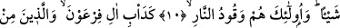
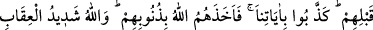
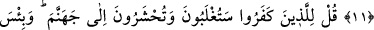
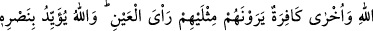
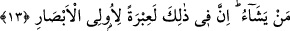

MAL VE EVLAT SEVGİSİ
10. (Bilinmelidir ki) inkâr edenlerin ne malları ne de evlâdları Allah huzûrunda
kendilerine bir fayda sağlayacaktır. İşte onlar cehennemin yakıtıdır.
11. (Onların yolu) Firavun hanedanının ve onlardan öncekilerin tuttuğu yola
benzer. Onlar bizim âyetlerimizi yalanladılar, Allah da kendilerini günahları
yüzünden yakalayıverdi. Allah’ın cezası çok şiddetlidir.
12. (Rasûlüm!) İnkâr edenlere de ki: Yakında mağlûb olacaksınız ve cehenneme
sürüleceksiniz. Orası kalınacak ne kötü bir yerdir!
13. (Bedir’de) karşı karşıya gelen şu iki gurubun hâlinde sizin için büyük bir ibret
vardır. Biri Allah yolunda çarpışan bir gurup, diğeri ise bunları apaçık kendilerinin
iki misli gören kâfir bir gurup. Allah dilediğini yardımı ile destekler. Elbette bunda
basîret sahipleri için büyük bir ibret vardır.
İnkâr edenlere, kendilerine fayda temin etmek, zararları da defetmek için sarfettikleri
malları hiç bir fayda vermeyecektir.
Âyet-i celîlede mal, evlâddan önce zikredilmiştir. Çünkü bir belâ ve sıkıntı vukûunda
insanın ilk sığındığı şey malıdır. Önemli hallerin zuhûrunda onlara kendileri ile
yardımlaştıkları evlâdları da bir fayda vermeyecektir. Halbuki onlar bir büyük
hâdisenin zuhûrunda çocuklarına sığınırlar.
Kâfirleri, malları da evlâdları da, onlardan yardım beklemeleri de Allah’ın azabından
kurtaramaz. Bunlara sığınıp yardım dilemelerinin bir faydası olamaz. Halbuki onlar “biz
malca ve evlâdca daha çoğuz, kesinlikle de azap görmeyeceğiz.” diyorlar. Cenâb-ı Hak
da bunlara cevap olarak: “Mallarınız ve evlâdlarınız sizi bize yaklaştıracak şeyler
değildir. Ancak îman edip sâlih amel işleyenler müstesna?” (Sebe’ 34/37)
buyurmuştur. Yani mal ve evlâd ancak sâlih amel işleyen kimselerin Allah’a
yaklaşmalarına yardımcı olabilir, fayda verebilir. İşte bu küfür sıfatıyla tanımlananlar,